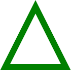

A CSS experiment around Geometrical Design in history.
I’ve been practicing CSS for some time but I really needed a project to train myself and push my skills forward. That’s why I decided to go over my favorite Geometrical Art Works and build them in CSS from scratch. Enjoy!
